Purpose: Explore the relationship between residuals from K. Gauthier’s daily stream temperature model and independent metrics of groundwater availability. This is somewhat complicated by the fact that Kevin’s model already uses groundwater availability as a covariate, so we really aren’t evaluating how much additional information the groundwater metric adds, but rather the variance that isn’t explained by the existing metric (e.g., driven by spatial/temporal variation in groundwater temperature, lagged groundwater temperature signals, etc.).
p +facet_wrap_paginate(~ site, ncol =3, nrow =4, page =1)
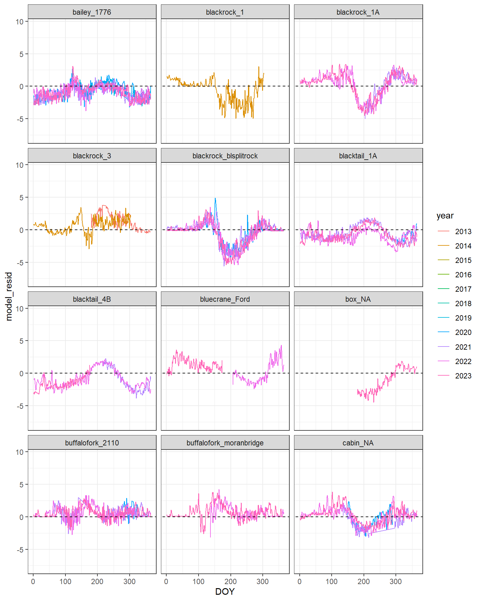
Code
p +facet_wrap_paginate(~ site, ncol =3, nrow =4, page =2)
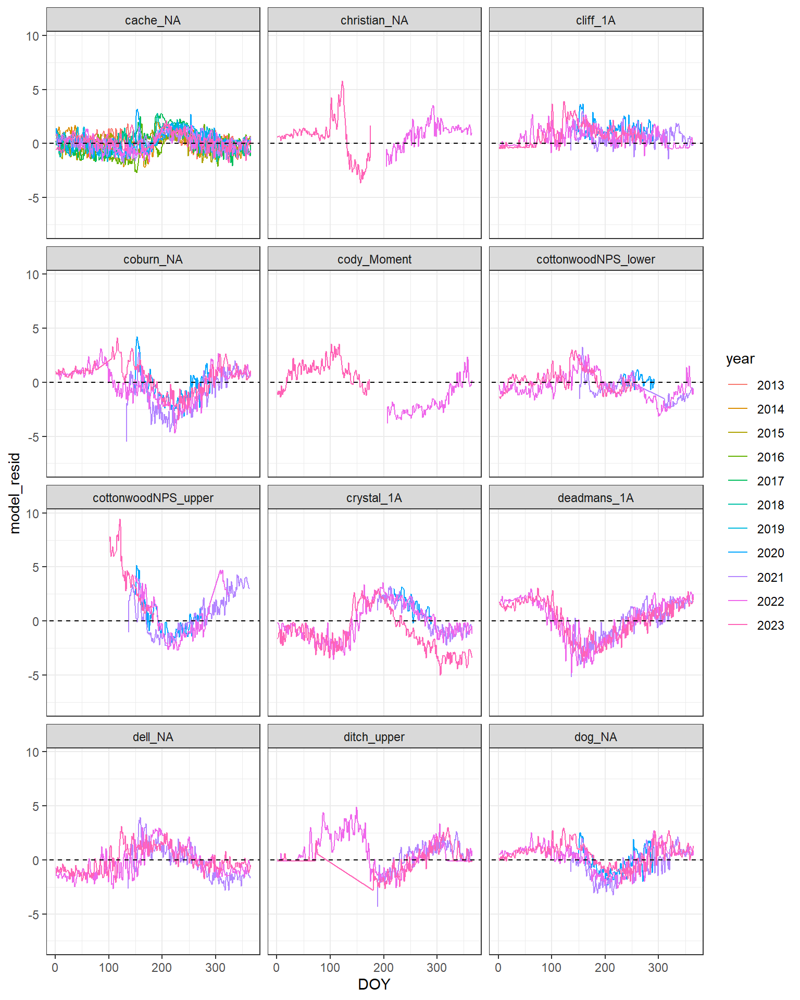
Code
p +facet_wrap_paginate(~ site, ncol =3, nrow =4, page =3)
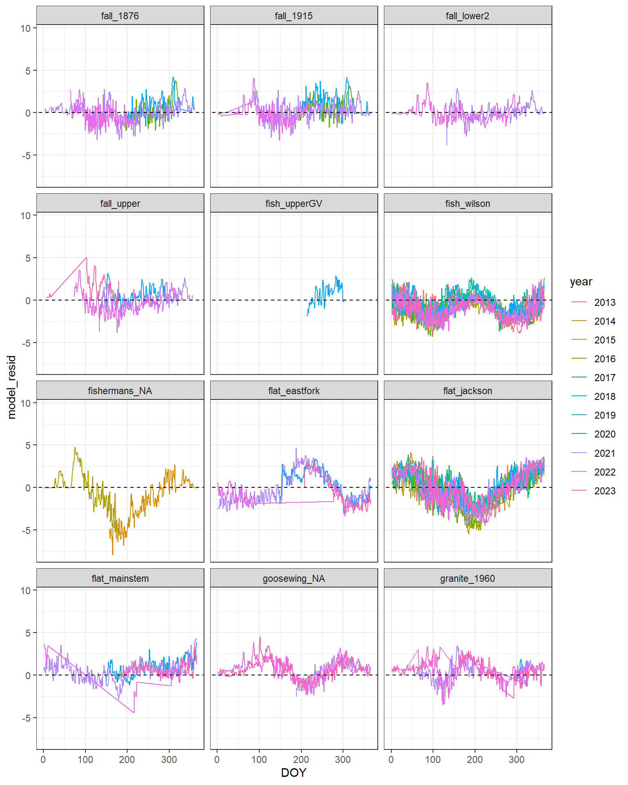
Code
p +facet_wrap_paginate(~ site, ncol =3, nrow =4, page =4)
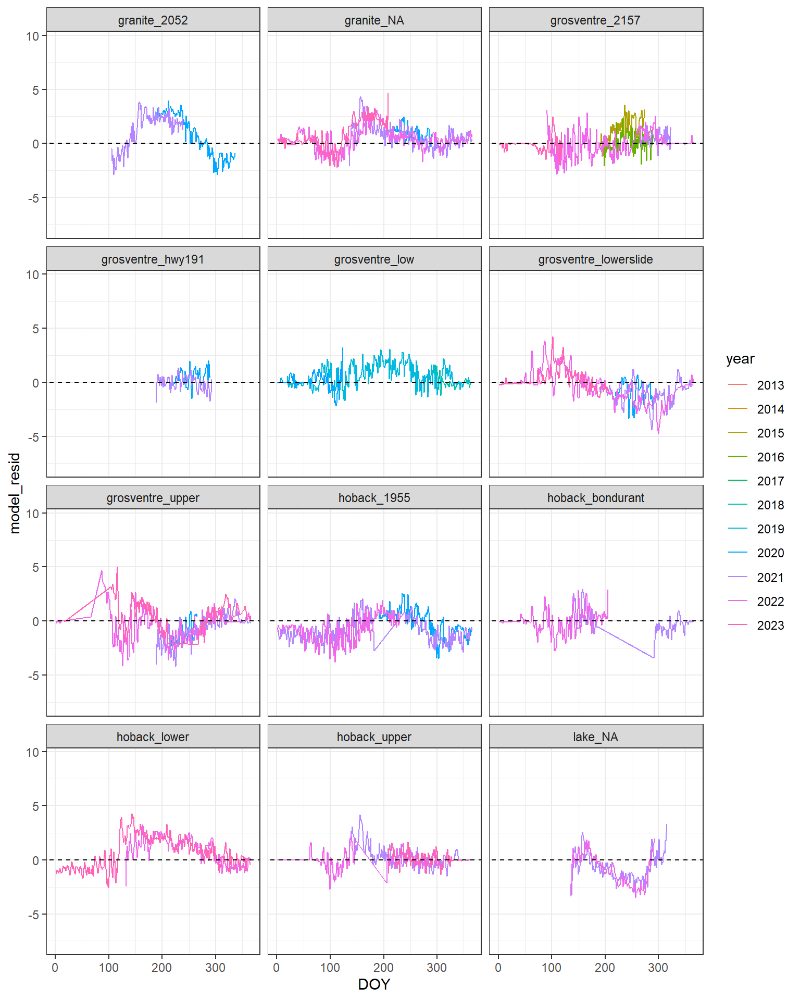
Code
p +facet_wrap_paginate(~ site, ncol =3, nrow =4, page =5)
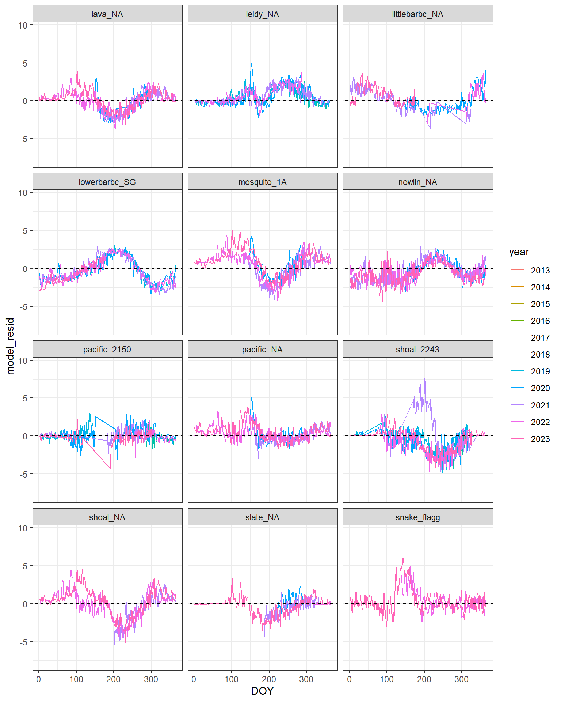
Code
p +facet_wrap_paginate(~ site, ncol =3, nrow =4, page =6)
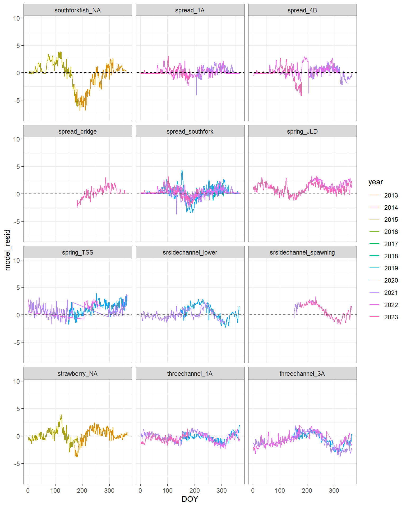
Code
p +facet_wrap_paginate(~ site, ncol =3, nrow =4, page =7)
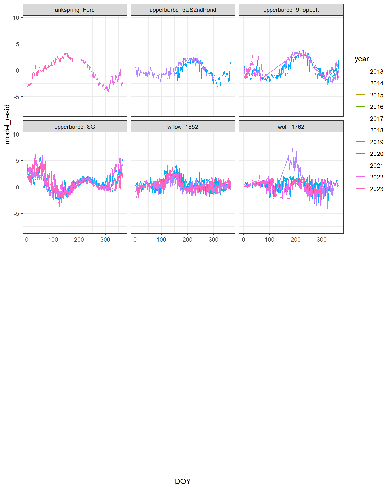
Annual pattern of residuals is generally consistent among years, within sites. Strong autocorrelation
3.4 Model residuals
Absolute residuals by groundwater input
Code
summary(lm(abs(model_resid) ~abs(model_resid_lag) + gw_influence, data = dat))
Call:
lm(formula = abs(model_resid) ~ abs(model_resid_lag) + gw_influence,
data = dat)
Residuals:
Min 1Q Median 3Q Max
-3.2751 -0.2558 -0.0380 0.2549 4.5355
Coefficients:
Estimate Std. Error t value Pr(>|t|)
(Intercept) 0.148783 0.003373 44.11 <2e-16 ***
abs(model_resid_lag) 0.838719 0.002045 410.17 <2e-16 ***
gw_influence 0.106627 0.008510 12.53 <2e-16 ***
---
Signif. codes: 0 '***' 0.001 '**' 0.01 '*' 0.05 '.' 0.1 ' ' 1
Residual standard error: 0.4909 on 70337 degrees of freedom
(284 observations deleted due to missingness)
Multiple R-squared: 0.7122, Adjusted R-squared: 0.7122
F-statistic: 8.703e+04 on 2 and 70337 DF, p-value: < 2.2e-16
Code
dat %>%ggplot(aes(x = gw_influence, y =abs(model_resid))) +geom_point() +theme(legend.position ="none") +geom_smooth(method ="lm")
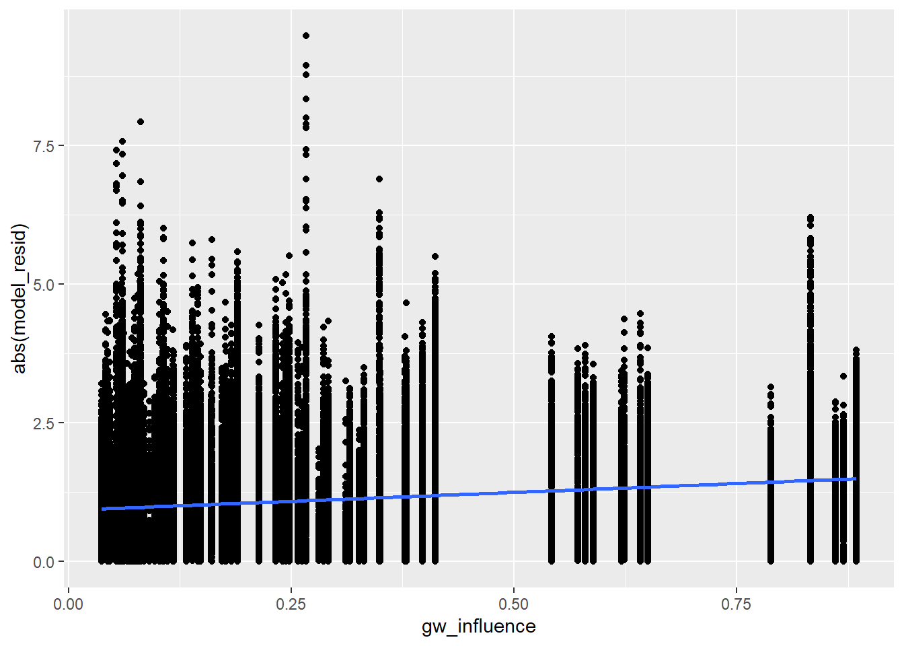
Residuals by groundwater and month
Code
dat %>%ggplot(aes(x = gw_influence, y = model_resid)) +geom_point() +geom_smooth(method ="lm") +facet_wrap(~tim.month) +theme_bw()
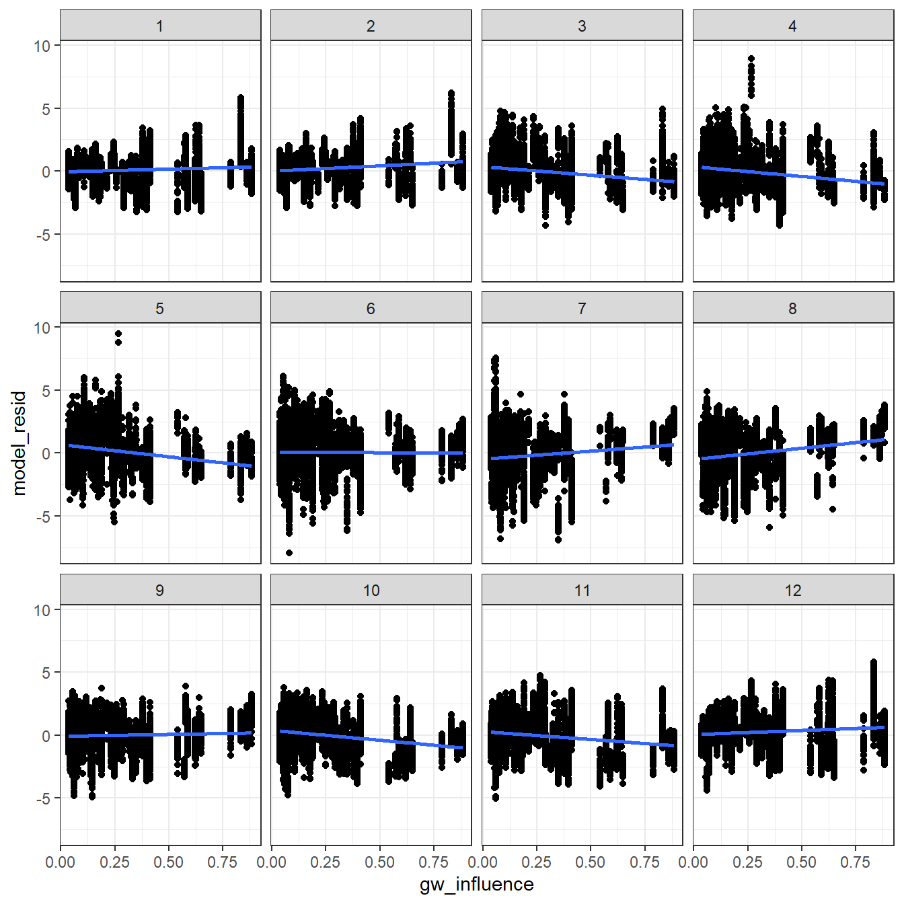
Explore time varying effects of groundwater on model residuals (linear mixed effects model includes lagged/autocorrelation term and random intercepts for year).
Code
# fit mixed effects models in a loop, independently for each month: residuals as a function of lagged residuals, site-level groundwater influence, and random intercepts for yearmodlist <-list()for (i in1:12) { modlist[[i]] <-lmer(model_resid ~ model_resid_lag + gw_influence + (1|year), data = dat %>%filter(tim.month == i))}# empty tibble to store coefficientsefftib <-tibble(month =1:12, mean.gw =rep(NA, 12),lower.gw =rep(NA, 12),upper.gw =rep(NA, 12), mean.ac =rep(NA, 12),lower.ac =rep(NA, 12),upper.ac =rep(NA, 12))# get coefficients, means and 95% confidence intervalsfor (i in1:12) { efftib$mean.gw[i] <-fixef(modlist[[i]])[3] efftib$lower.gw[i] <-confint(modlist[[i]])[5,1] efftib$upper.gw[i] <-confint(modlist[[i]])[5,2] efftib$mean.ac[i] <-fixef(modlist[[i]])[2] efftib$lower.ac[i] <-confint(modlist[[i]])[4,1] efftib$upper.ac[i] <-confint(modlist[[i]])[4,2]}# plot autocorrelation termsefftib %>%ggplot() +geom_point(aes(x = month, y = mean.ac)) +geom_errorbar(aes(x = month, ymin = lower.ac, ymax = upper.ac), width =0.4) +geom_abline(intercept =0, slope =0, linetype ="dashed") +theme_bw() +theme(panel.grid =element_blank()) +ylab("Autocorrelation term") +scale_x_continuous(breaks =c(1:12))
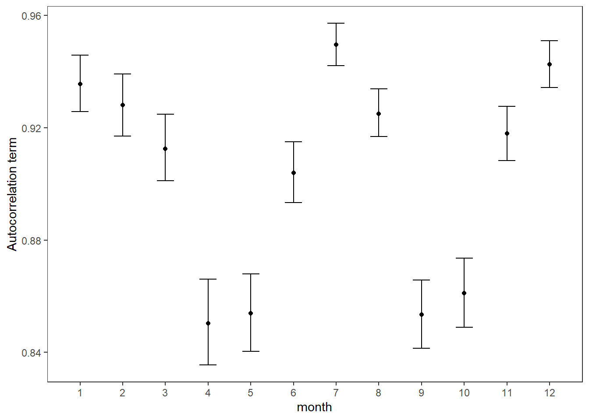
Code
# plot groundwater effectsefftib %>%ggplot() +geom_point(aes(x = month, y = mean.gw)) +geom_errorbar(aes(x = month, ymin = lower.gw, ymax = upper.gw), width =0.4) +geom_abline(intercept =0, slope =0, linetype ="dashed") +theme_bw() +theme(panel.grid =element_blank()) +ylab("Effect of groundwater on model residuals") +scale_x_continuous(breaks =c(1:12))
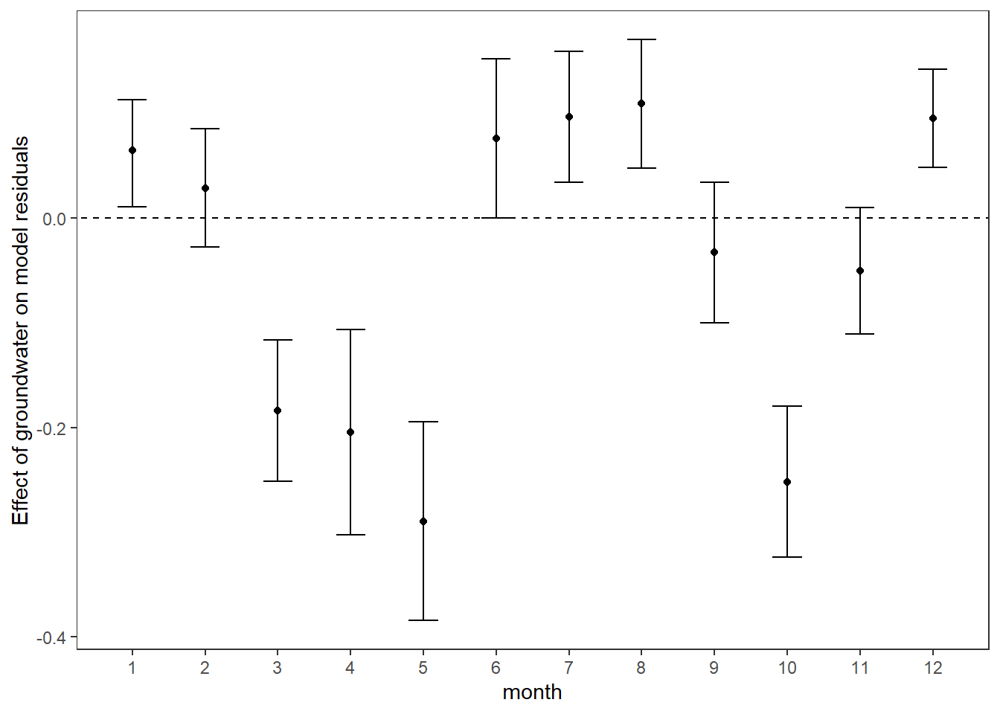
3.5 Model RMSE
Alternatively, we can model monthly RMSE, rather than the raw residuals. This eliminates the need for an autocorrelation term and is based on a coarser measure of predictive accuracy (is using/modeling all residuals pseudoreplication), but limits our ability to discriminate between under vs over-estimates/predictions.
Fit linear mixed effects models in a loop, independently for each month: RMSE as a function of site-level groundwater influence and random intercepts for year
Code
modlist <-list()for (i in1:12) { modlist[[i]] <-lmer(rmse ~ gw_influence + (1|year), data = errorterms %>%filter(tim.month == i))}# empty tibble to store coefficientsefftib <-tibble(month =1:12, mean.gw =rep(NA, 12),lower.gw =rep(NA, 12),upper.gw =rep(NA, 12))# get coefficients, means and 95% confidence intervalsfor (i in1:12) { efftib$mean.gw[i] <-fixef(modlist[[i]])[2] efftib$lower.gw[i] <-confint(modlist[[i]])[4,1] efftib$upper.gw[i] <-confint(modlist[[i]])[4,2]}# plot groundwater effectsefftib %>%ggplot() +geom_point(aes(x = month, y = mean.gw)) +geom_errorbar(aes(x = month, ymin = lower.gw, ymax = upper.gw), width =0.4) +geom_abline(intercept =0, slope =0, linetype ="dashed") +theme_bw() +theme(panel.grid =element_blank()) +ylab("Effect of groundwater on model RMSE") +scale_x_continuous(breaks =c(1:12))
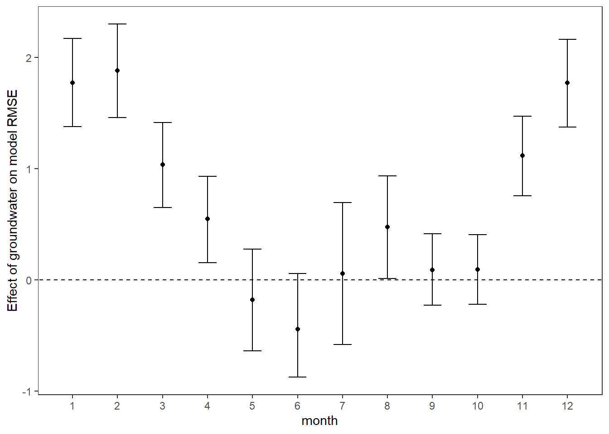
3.5.2 Interaction model
Same, but different: model the interaction between month and groundwater directly: